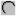

Drawing in the Symbol Editor
The following sections describe how to use the Symbol Editor tools to draw the geometric representation that you need for a component symbol. After you have drawn a shape or line using one of the tools, you can move and resize it.
To activate the grid in the Symbol Editor window to aid in drawing a symbol, choose View > Show Grid or press the F6 key.
Drawing a Circle or Ellipse
To draw a circle or ellipse:
- Click the Circle icon:
 .
.
- Click where you need to position the center of the circle/ellipse.
As you move the mouse away from the center, the radius of the circle increases or, alternatively, the size and shape of the ellipse change.
- Click to fix the size of the shape.
Drawing a Rectangle
To draw a rectangle:
- Click the Rectangle icon:
 .
.
- Click where you want to place one corner of the rectangle.
- Click where you want to place the diagonally opposite corner of the rectangle.
Drawing Straight Lines
To draw a straight line or a series of connected line segments:
- Click the Line icon:
.
- Click where you need the line to start.
- Move the mouse to dictate the direction of the line.
- Click once wherever you need a corner.
- Double-click to terminate a line, or the last of a series of connected lines.
Drawing a Polygon
To draw a closed polygon:
- Click the Line icon:
.
- Click where you need the first edge of the polygon to start.
- Move the mouse to dictate the direction of the line.
- Click once wherever you need to end the current line segment and begin the next line segment.
- Continue extending line segments and their adjacent angles until you return to the starting point of the polygon.
- Double-click to complete the polygon.
Drawing an Arc
To draw an arc of a circle:
- Click the Arc icon:

.
- Click where you need to place one endpoint of the arc.
- Click where you need to place the other endpoint of the arc.
- Move your mouse to create the angle of the arc.
- Click to fix the angle.